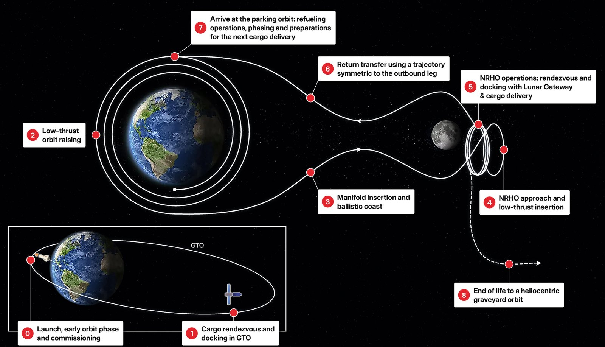
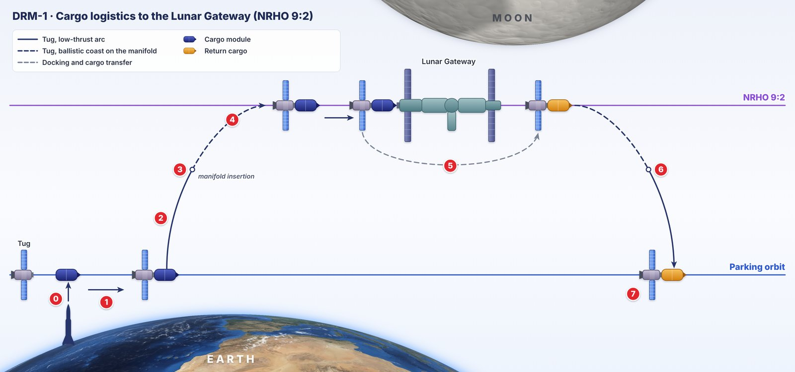
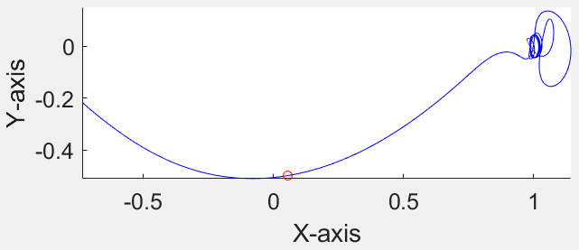
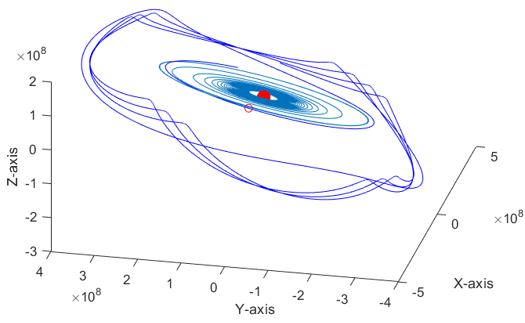
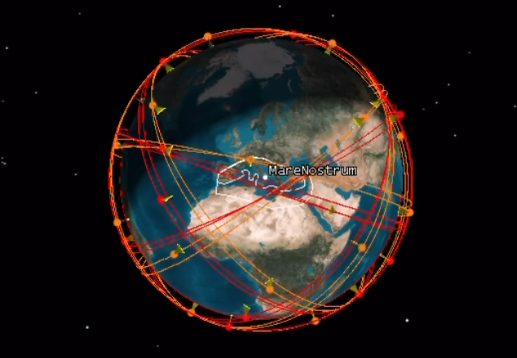
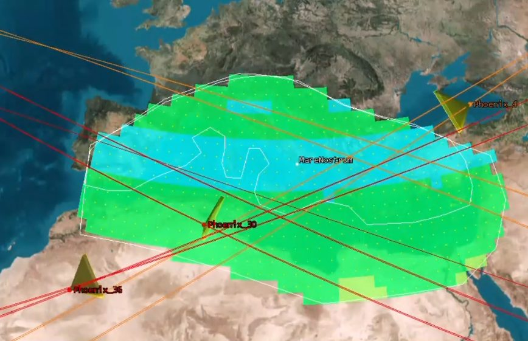

MSc Aerospace and Astronautical Engineering, Politecnico di Torino
Courses include Orbital Mechanics, Space Propulsion, Access to Space and Advanced Rocket Propulsion, and the Mission Project.
Aerospace engineer · spacecraft trajectories and mission design
I am an aerospace engineer, currently an academic researcher in spacecraft trajectory design and mission design at Politecnico di Torino. For my Master's thesis I spent six months in Prof. Shane Ross's group at Virginia Tech, building a low-thrust and invariant-manifold transfer to lunar orbit for a reusable cargo spacecraft. Now I want to join a team where trajectories and manoeuvres leave the code and are flown by real satellites.
Research Engineer at Politecnico di Torino since October 2026 · open to roles in mission analysis and spacecraft operations
As a Research Engineer at Politecnico di Torino, I am working on the Space Tug project, a mission in the Earth–Moon system. The activity builds on the trajectory design developed during my Master's thesis and focuses on new aspects: the phasing problem of the mission, the development of a high-fidelity model of its trajectory and the design and ConOps of the entire mission delivering supplies to lunar orbit.
The aim is to publish the results in a journal, and so it is mandatory to work on innovations for the mission design and a higher precision on the trajectory.


Keywords: Astrodynamics, trajectory design, Earth–Moon system, Three-Body Problem, phasing, high-fidelity modelling, mission analysis.
As a visiting scholar – researcher in Prof. Shane Ross's group at Virginia Tech (Virginia, USA), co-supervised by Prof. Nicole Viola (Politecnico di Torino), I redesigned the trajectory of the Space Tug, a reusable all-electric cargo spacecraft developed at Politecnico di Torino to provide continuous resupply between Earth orbit and the Lunar Gateway.
While the previous baseline trajectory relied on a continuous low-thrust spiral of 364 days, my work introduced a hybrid strategy combining the use of low-thrust propulsion with manifold coasting, substantially cutting fuel consumption and time of flight.
The manifold coasting indeed does not rely on thrust, but solely on the gravitational dynamics of the Three-Body Problem, which I explored thanks to the mentorship of Professor Ross, who is a world expert in the field.


Keywords: Mission design, mission analysis, orbit propagation, CR3BP, invariant manifolds, Lunar Orbit, NRHO, low-thrust trajectory design, fleet sizing. Tools: MATLAB, Ansys STK/Astrogator.
In a group mission-design project I was the mission analyst. We designed a constellation of 40 satellites with rectangular sensors simulating whisk-broom scanning, and targeted coverage on the high-risk zones shown on Copernicus fire-danger maps. I also worked on orbit propagation and Space Situational Awareness in STK, and on collision avoidance with SPICE/MICE.
| Case | Result |
|---|---|
| Average revisit | 30 min |
| Best, high-risk zones | 18 min |
| Maximum revisit, mean | 1 h 38 min100% of the area covered within 2 h 45 min |
| Off-design case | ≈ 2 h 15 min max100% of the European Mediterranean within 3 h 50 min |
| Requirement, maximum revisit time | 4 h 30 min |


After a year on propulsion I became Project Manager of the team's new hybrid propulsion division (Aug 2023 – Sep 2024). I built and led the group designing a hybrid rocket engine from scratch for a 9,000 m apogee rocket, led the ascent mission analysis and the configuration decisions, and took part in trajectory simulations.
Before that I designed, built and tested the propulsion and recovery systems of a solid-propellant rocket model aiming at 3,000 m.
Our team's SpaceTug concept won the I3P Special Award at the ActInSpace 2022 innovation challenge and was selected for a three-month pre-incubation course at I3P, the Politecnico di Torino startup incubator.
Courses include Orbital Mechanics, Space Propulsion, Access to Space and Advanced Rocket Propulsion, and the Mission Project.
Master's thesis research on Three-Body Problem dynamics, spaceflight dynamics and trajectory design in the Earth–Moon system.
Thesis: "Theory and history of the Gravity Assist".
Introduction to Astronomy; Introduction to Computer Science and Programming in Python.